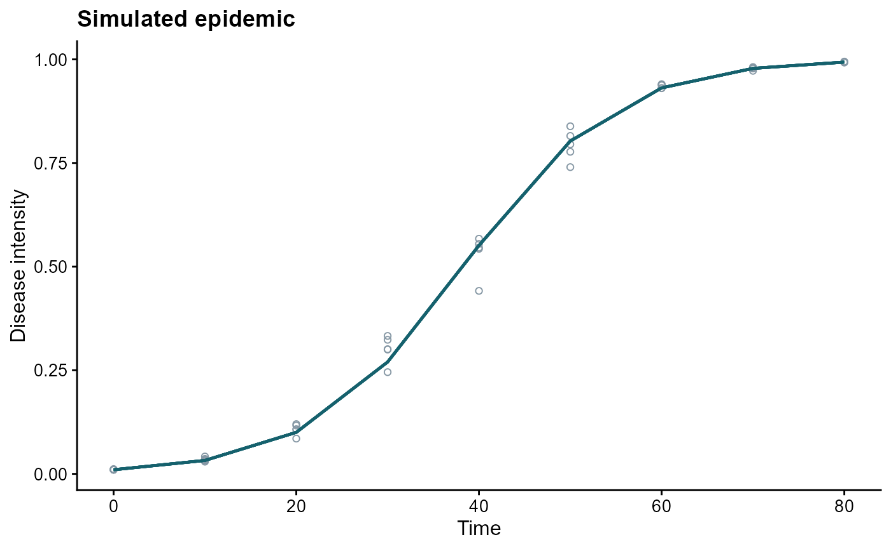
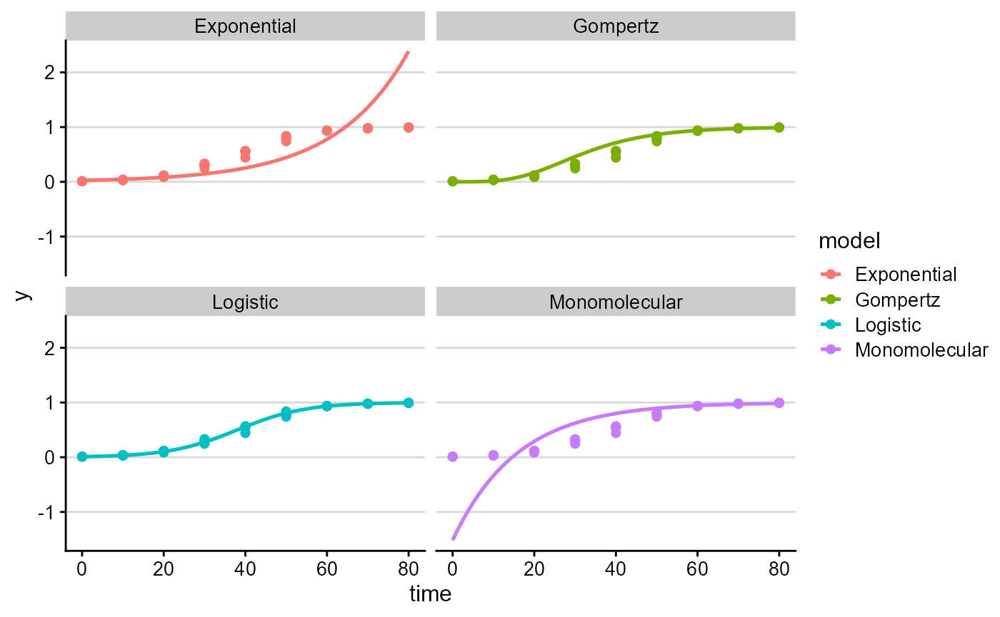

What epifitter does
epifitter helps analyze plant disease progress curves by
combining:
- simulation helpers for synthetic epidemics;
- fitting functions for canonical disease progress models;
- summary measures such as
AUDPC() and
AUDPS();
- plotting functions that return
ggplot2 objects.
A first epidemic
| 1 |
0 |
0.0100 |
0.0100 |
| 1 |
10 |
0.0325 |
0.0336 |
| 1 |
20 |
0.1002 |
0.0851 |
| 1 |
30 |
0.2699 |
0.3328 |
| 1 |
40 |
0.5511 |
0.5674 |
| 1 |
50 |
0.8030 |
0.7770 |
ggplot(epi, aes(time, y, group = replicates)) +
geom_point(aes(y = random_y), shape = 1, color = "#8597a4") +
geom_line(color = "#15616d", linewidth = 0.8) +
labs(
title = "Simulated epidemic",
x = "Time",
y = "Disease intensity"
)

Fit candidate models
fit <- fit_lin(time = epi$time, y = epi$random_y)
fit
## Results of fitting population models
##
## Stats:
## CCC r_squared RSE
## Logistic 0.9988 0.9976 0.1561
## Gompertz 0.9774 0.9558 0.4734
## Monomolecular 0.9313 0.8714 0.6420
## Exponential 0.9161 0.8452 0.6337
##
## Infection rate:
## Estimate Std.error Lower Upper
## Logistic 0.11931599 0.0009014682 0.11749801 0.12113397
## Gompertz 0.08329917 0.0027332800 0.07778699 0.08881135
## Monomolecular 0.06325781 0.0037064427 0.05578306 0.07073257
## Exponential 0.05605817 0.0036589168 0.04867927 0.06343708
##
## Initial inoculum:
## Estimate Linearized lin.SE Lower Upper
## Logistic 1.058484e-02 -4.5376913 0.04291847 9.715742e-03 0.011530776
## Gompertz 7.809693e-05 -2.2468144 0.13013015 4.571513e-06 0.000692952
## Monomolecular -1.515280e+00 -0.9223841 0.17646197 -2.590364e+00 -0.762114625
## Exponential 2.690866e-02 -3.6153072 0.17419928 1.893746e-02 0.038235118
fit$stats_all contains the full ranking of candidate
models.
knitr::kable(fit$stats_all, digits = 4)
| 1 |
Logistic |
0.1193 |
0.0009 |
0.1175 |
0.1211 |
-4.5377 |
0.0429 |
0.9976 |
0.1561 |
0.9988 |
0.0106 |
0.0097 |
0.0115 |
| 2 |
Gompertz |
0.0833 |
0.0027 |
0.0778 |
0.0888 |
-2.2468 |
0.1301 |
0.9558 |
0.4734 |
0.9774 |
0.0001 |
0.0000 |
0.0007 |
| 3 |
Monomolecular |
0.0633 |
0.0037 |
0.0558 |
0.0707 |
-0.9224 |
0.1765 |
0.8714 |
0.6420 |
0.9313 |
-1.5153 |
-2.5904 |
-0.7621 |
| 4 |
Exponential |
0.0561 |
0.0037 |
0.0487 |
0.0634 |
-3.6153 |
0.1742 |
0.8452 |
0.6337 |
0.9161 |
0.0269 |
0.0189 |
0.0382 |
Visualize predictions
plot_fit(fit, point_size = 1.8, line_size = 0.9)

Work with multiple epidemics
epi_a <- sim_gompertz(N = 50, y0 = 0.002, dt = 5, r = 0.10, alpha = 0.2, n = 3)
epi_b <- sim_gompertz(N = 50, y0 = 0.002, dt = 5, r = 0.14, alpha = 0.2, n = 3)
multi_epi <- bind_rows(epi_a, epi_b, .id = "epidemic")
multi_fit <- fit_multi(
time_col = "time",
intensity_col = "random_y",
data = multi_epi,
strata_cols = "epidemic"
)
knitr::kable(head(multi_fit$Parameters), digits = 4)
| 1 |
1 |
Gompertz |
0.0997 |
0.0017 |
0.0962 |
0.1032 |
-1.7976 |
0.0513 |
0.9907 |
0.1575 |
0.9953 |
0.0024 |
0.0012 |
0.0044 |
| 1 |
2 |
Monomolecular |
0.0671 |
0.0032 |
0.0605 |
0.0737 |
-0.4718 |
0.0957 |
0.9327 |
0.2939 |
0.9652 |
-0.6028 |
-0.9484 |
-0.3186 |
| 1 |
3 |
Logistic |
0.1655 |
0.0090 |
0.1473 |
0.1838 |
-4.3343 |
0.2650 |
0.9168 |
0.8136 |
0.9566 |
0.0129 |
0.0076 |
0.0220 |
| 1 |
4 |
Exponential |
0.0984 |
0.0115 |
0.0751 |
0.1218 |
-3.8625 |
0.3390 |
0.7042 |
1.0408 |
0.8264 |
0.0210 |
0.0105 |
0.0420 |
| 2 |
1 |
Gompertz |
0.1404 |
0.0018 |
0.1367 |
0.1441 |
-1.7956 |
0.0537 |
0.9949 |
0.1648 |
0.9974 |
0.0024 |
0.0012 |
0.0045 |
| 2 |
2 |
Monomolecular |
0.1102 |
0.0036 |
0.1028 |
0.1175 |
-0.6420 |
0.1069 |
0.9677 |
0.3282 |
0.9836 |
-0.9003 |
-1.3632 |
-0.5281 |
Next steps
- Use the model fitting article for a deeper walkthrough of
fit_lin(), fit_nlin(),
fit_nlin2(), and fit_multi().
- Use the simulation article for examples built around the
sim_ family.
- Use the PowderyMildew article for a real-data workflow based on the
bundled experimental dataset.